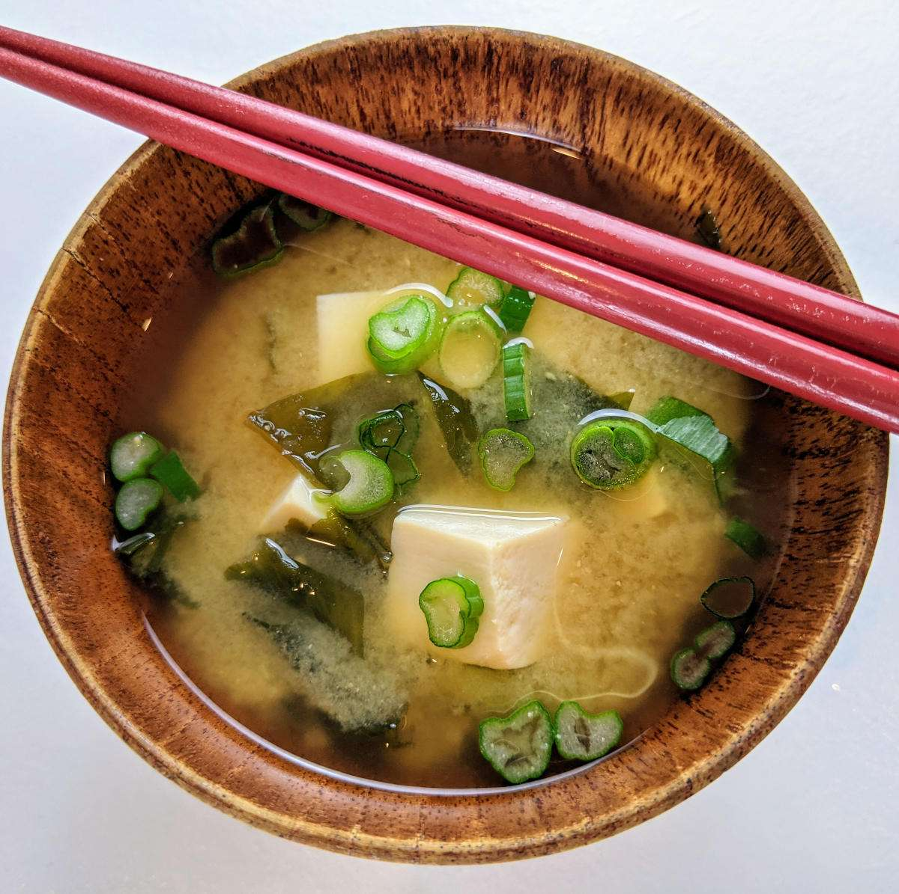

Miso Soup Recipe

Traditional Japanese soup made primarily of miso paste, dashi (broth)
Miso soup is a traditional Japanese soup that starts with a dashi stock and is flavored with miso paste.
Dashi is an umami-rich stock made from dried seaweed and dried fish. Miso paste, meanwhile, is a paste made from soybeans, salt,
and koji rice.
The brothy soup usually contains tofu and green onions. It can also feature seaweed, mushrooms, daikon, and more.
Miso soup is traditionally served with rice.
Ingredients
These are the basic, easy-to-find ingredients you'll need to make this top-rated miso soup recipe:
- 4 cups water
- 2 teaspoons dashi granules
- 3 tablespoons miso paste
- 1 (8 ounce) package silken tofu, diced
- 2 green onions, sliced diagonally into 1/2 inch pieces
Steps
- Combine water and dashi granules in a medium saucepan over medium-high heat; bring to a boil.
- Reduce heat to medium and whisk in miso paste
- Stir in tofu. Separate the layers of green onions, and add them to the soup.
- Simmer gently for 2 to 3 minutes before serving.